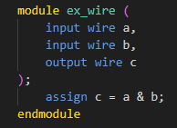

1. Signals assigned values within an always block must be declared as reg. (T/F) 2. The default type for signals not explicitly declared in Verilog is reg. (T/F) 3. An assign statement should only be used with signals declared as reg. (T/F) 4. A signal that changes in response to a clock edge should be declared as reg. (T/F) 5. In combinational logic, signals in the sensitivity list are typically declared as wire.(T/F)
`wire`: Used for combinational logic and signal connections, cannot store values, driven by `assign` statements. `reg`: Used for sequential logic, can store values, assigned within always blocks. Reminders: ・Variables assigned within an always block must be of type reg. ・If a signal is not explicitly declared as wire or reg, it defaults to wire.